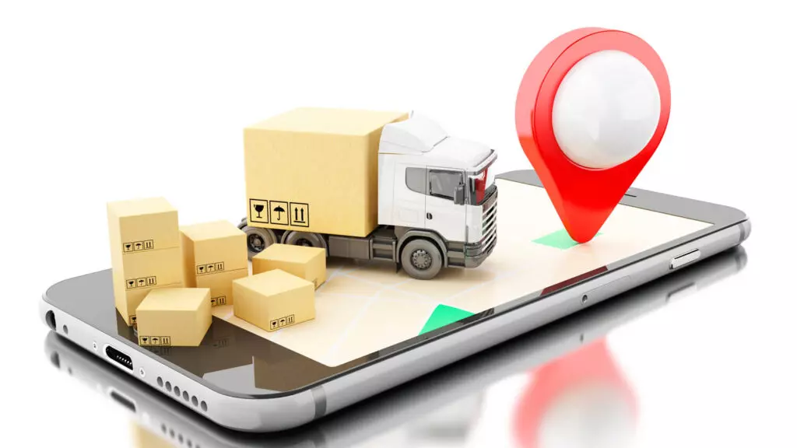

Durante mucho tiempo tuvimos que explicar que la experiencia de compra online era superadora y había llegado para quedarse. Hoy ese concepto está instalado y es incuestionable, el campo de batalla se ha corrido en demostrar que la experiencia logística es la clave de la satisfacción y la recompra en éste Nuevo Mundo. Aparece la necesidad de entregas cada vez más rápidas y flexibles en tiempo y lugar de recepción. Esto instala una nueva exigencia y complejidad en la gestión de entregas, y es así que las marcas de comercio electrónico y los grandes minoristas deben poner énfasis en cumplir ésta promesa.
Al momento de evaluar costos de envío son muchos los transportes que utilizan el concepto de peso aforado, que me parece importante conozcas. Los productos pueden cotizarse por peso o por volumen, para éstos últimos se utiliza un factor de aforo, que da como resultado un peso aforado. Esto se aplica para productos de gran volumen y poco peso, dándoles a los transportes un valor más razonable que si lo evaluaran meramente por su peso.
En Acercarte te ofrecemos una solución única con Mercado Libre que te permite mostrar a tu cliente el precio de envío al momento de la compra, con una experiencia similar a la que ofrece Mercado Envíos. Vos vas a definir por Acercarte si querés que se muestre el precio del operador más económico o más rápido. En función de esta regla, será el resultado que se muestre a tu cliente. Luego, tu cliente al comprar, te va a pagar precio de envío y precio de producto.
¿Sabías que en Argentina, la Secretaría de Comercio Interior emitió la Resolución 424/2020 que establece la obligatoriedad de colocar de manera destacada en sus plataformas un “Botón de arrepentimiento”? Si vendés bienes o servicios a través del comercio electrónico a partir del 4 de diciembre del 2020 deberás permitir a tus clientes solicitar la revocación de la aceptación del producto comprado o del servicio contratado. Se establece un plazo de diez días corridos contados a partir de la fecha de entrega.
"Gracias a Acercarte podemos hacer envíos de todos nuestros productos a cualquier parte del país utilizando una única plataforma."
"...nos ha sido útil para optimizar la logística para nuestro canal de ventas. El servicio de recolección es muy puntual.”
"...son accesibles, escuchan y se adecuan a las necesidades de nuestra empresa. Es un aliado logístico estratégico para nuestro canal ecommerce y para cualquier Pyme!"
"Elegimos Acercarte porque nos dio la posibilidad de centralizar todos nuestros envíos desde una misma plataforma, llegando a todo el país ahorrándonos tiempo y dinero."